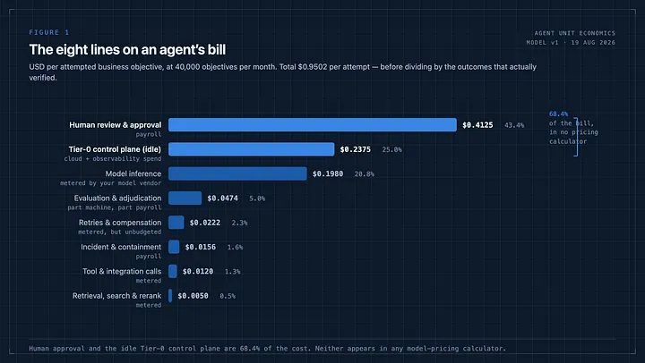
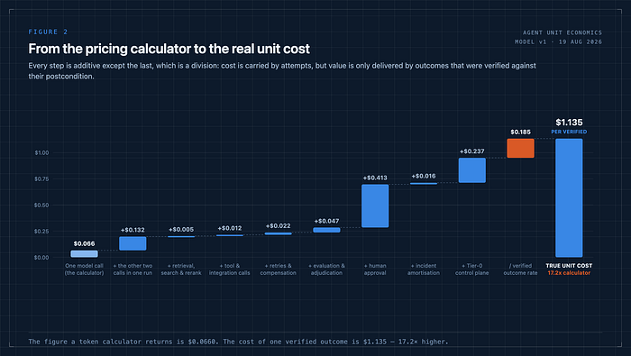
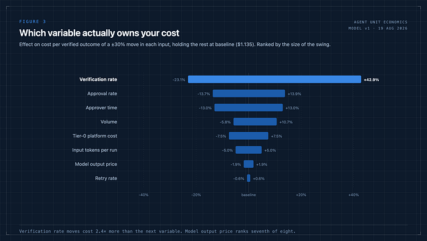
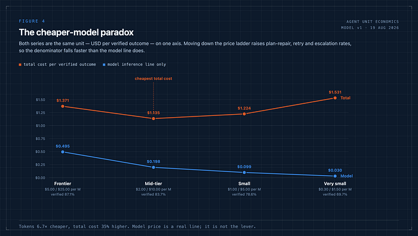
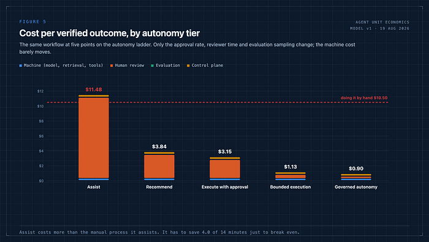
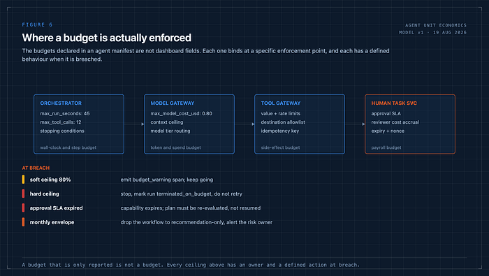
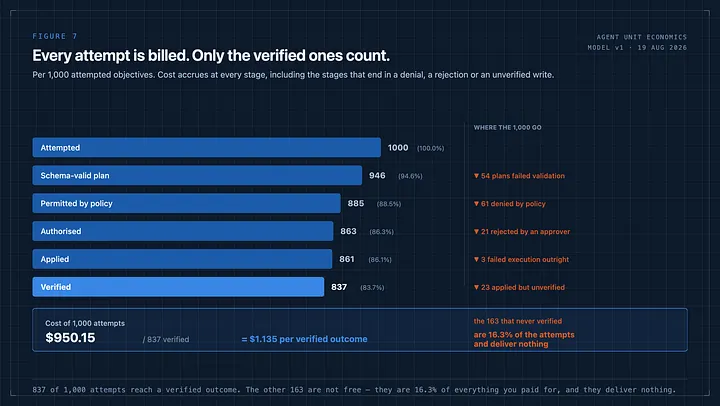
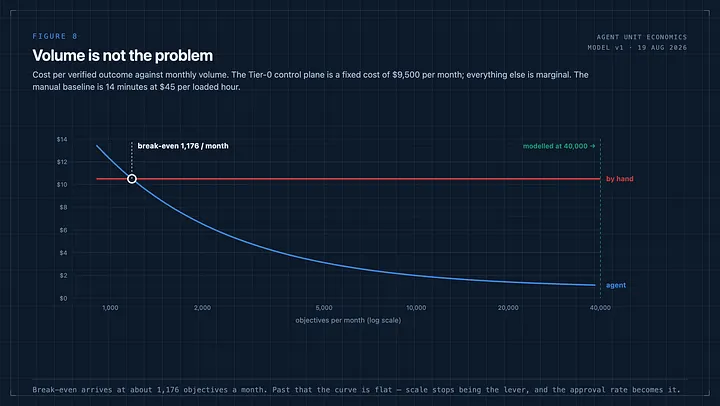
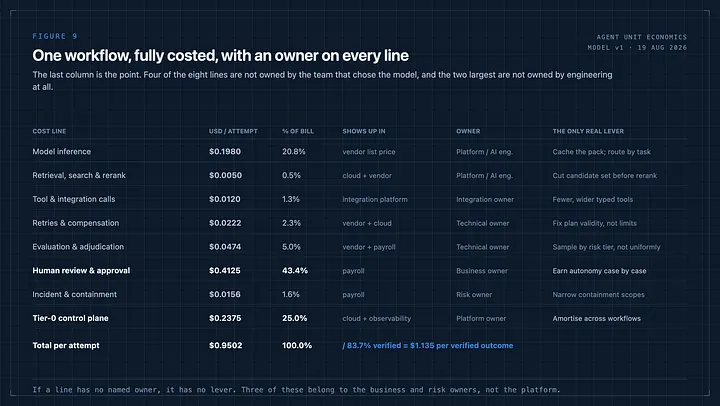
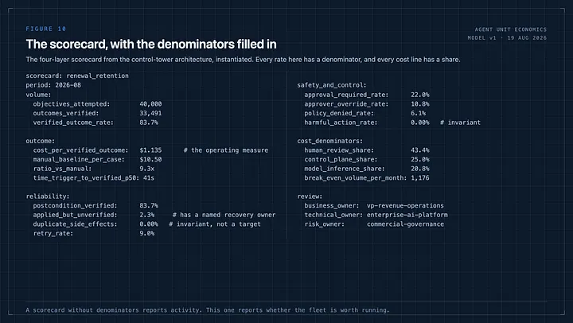

At 3:40 on a Thursday afternoon, a finance business partner asked a question that a lot of agent programmes cannot answer.
The team had run a support-triage agent for a quarter. The business case had been built on a number from a vendor pricing page: fractions of a cent per call. The invoice she was holding was not fractions of a cent per call.
Nobody in the room was wrong, exactly. The engineers had quoted the model price accurately. The finance partner had read the total accurately. The gap between them was not an error. It was everything the pricing page does not contain.
In the control tower architecture I argued that the operating measure for an agent fleet is cost per verified outcome at an acceptable risk level, and then I did not derive it. This article derives it.
I have built the model as a transparent set of inputs rather than a case study, because I would rather you disagreed with my assumptions than trusted my arithmetic. Every figure below comes out of the same model. The token prices are list prices published on 19 August 2026. Everything else is stated, and you should change it.
The unit is a verified outcome, not a call#
The first thing that goes wrong is the denominator.
A model call is a technical event. A business objective is a unit of work the enterprise actually wanted: a case triaged and routed, a renewal risk assessed and acted on, an entitlement checked and a customer told the truth about it.
Between those two things sit a plan that may not validate, a policy that may deny, an approver who may reject, a tool call that may time out, and a postcondition that may never be confirmed. Every one of those paths costs money. Only the last one produces value.
So the measure is not cost per call, or cost per session, or cost per token. It is:
That division is where most of the surprise lives, and I will come back to it. But the numerator is where most of the money lives, and almost nobody itemises it.
The eight lines#

An agent’s bill has eight lines. Here they are, priced per attempted business objective, for a workflow running 40,000 objectives a month.
Model inference — $0.1980, 20.8%. Three calls per run: plan, repair-and-validate, summarise. 24,000 input tokens of evidence pack re-sent on each call, 1,800 output tokens per call, at $2.00 and $10.00 per million.
Retrieval, search and rerank — $0.0050, 0.5%. Hybrid search plus a cross-encoder rerank over the candidate set. Small, and it stays small.
Tool and integration calls — $0.0120, 1.3%. Six typed tool calls per run through a metered integration platform.
Retries and compensation — $0.0222, 2.3%. Nine per cent of runs retried once; a smaller fraction requiring a compensating action because the original was irreversible.
Evaluation and adjudication — $0.0474, 5.0%. Eight per cent of production traces sampled and graded, a fraction of those escalated to a human adjudicator. This line is part machine, part payroll, and it is the line teams cut first and regret first.
Human review and approval — $0.4125, 43.4%. Twenty-two per cent of runs require an approval; median reviewer time two and a half minutes; loaded cost $45 an hour.
Incident and containment — $0.0156, 1.6%. One material incident per 25,000 objectives, six engineer-hours each. Small per unit. Not small when it happens.
Tier-0 control plane — $0.2375, 25.0%. The multi-zone policy decision point, capability issuer, tool gateway, trace pipeline and evidence store, running whether or not an agent is currently thinking. $9,500 a month, divided by volume.
Total: $0.9502 per attempt.
Look at the ranking. Model inference is third. The two lines above it — a payroll line and a fixed infrastructure line — are 68.4% of the bill between them, and neither of them appears anywhere in a token calculator.
The second one deserves a moment. If you have built a control tower, you have built a Tier-0 system: multi-zone, fail-closed, with signing keys under hardware protection and a revocation path that has to work during an outage. That is not a side cost of governance. It is governance, and it costs a quarter of every outcome. I think that is money well spent. I also think most business cases have never seen it written down.
From the calculator to the real number#

Put one call into a vendor pricing calculator with a 24,000-token context and an 1,800-token response and you get $0.0660. That number is correct. It is also the smallest true statement available about this workflow.
Add the other two calls in the run and you are at $0.1980. Add retrieval, tools, retries, evaluation, approval, incident amortisation and the control plane and you are at $0.9502 per attempt. Then divide by the 83.7% of attempts that produce a verified outcome and you are at $1.135 per verified outcome.
Seventeen times the calculator. Not because the calculator lies, but because it answers a question nobody in a finance review is asking.
I would not present the first number to a CFO again. Not because it is dishonest — because it is unusable, and the gap between it and the real number is exactly the size of the credibility problem that shows up in quarter two.
What actually moves the number#

Swing each input by ±30% and hold the rest at baseline. Each pair below is the lower and upper bound of the resulting cost, ranked by the size of the swing. The order is uncomfortable if you have spent the quarter negotiating token prices.
Verification rate dominates, by a factor of 2.4 over the next variable, and it dominates asymmetrically: a 30% fall in the share of actions you can confirm costs you 42.9%, while the same rise saves you 23.1%. That asymmetry is the mathematics of a denominator, and it is the reason “applied but unverified” is an operational category and not a rounding error.
Then two payroll variables. Then volume. Then the platform. Then, in seventh place, the model output price — a ±30% move in which changes your unit cost by ±1.9%.
Halve your model price outright and total cost falls 11.4%. That is real money and I would take it. It is not a strategy.
The cheaper-model paradox#

Here is where the reasoning usually goes wrong. If model price is only a fifth of the bill, the obvious move is to buy a cheaper model. So model it properly — which means accepting that price and quality are coupled.
A weaker model produces fewer schema-valid plans on the first pass, needs more repair and retry, escalates more often because confidence is lower, and lands fewer actions that verify cleanly. Those are not speculative effects; they are the effects that a plan-validation gate and a postcondition check are built to detect.
Run the ladder:
The curve is U-shaped. The frontier tier is expensive because the model line is genuinely large. The very small tier is more expensive — 35% above the optimum — despite tokens 6.7 times cheaper, because the denominator collapses faster than the numerator.
The lesson is not “buy the mid-tier model.” The lesson is that this curve exists, that its minimum is a property of your workflow and not of the price list, and that you cannot find the minimum without measuring verification rate per model version. If you are not doing that, you are not choosing a model. You are choosing a price.
What the model line can do#
I should be fair to the one line engineering fully controls.
Two levers are real. Cache the evidence pack instead of re-sending 24,000 tokens on every call in the run: on this model that takes total cost down 9.1% — almost as much as halving the price, at no quality cost. Route by task class, so classification does not run on the same model as an ambiguous case plan.
Both are worth doing this month. Neither changes the shape of the bill. Together they are worth about the same as one point of approval rate, and approval rate has four more points available to it.
Autonomy is a cost decision before it is a governance decision#

Take the same workflow and move it along the five-stage autonomy ladder, changing only the approval rate, reviewer time and evaluation sampling.
Doing the case entirely by hand — 14 minutes at $45 a loaded hour — costs $10.50.
So the assist tier, at $11.48, costs more than the process it is assisting. On these assumptions it has to save at least 4.0 of the 14 minutes before it breaks even, and it only saves three.
I want to be careful here, because that finding is a function of my assumptions and not a law of nature. Change the time saved and the conclusion changes. But the structure is the point: an assist deployment adds the entire machine cost and the entire control-plane cost to a process whose dominant cost is the human minute, and then reduces the human minute by a little. It is the only tier on the ladder that has to justify itself against zero, and it is the tier most organisations deploy first.
The other structural finding is the gap between execute with approval ($3.15) and bounded execution ($1.13). That is a 2.8× reduction, and it is worth more than every model-price decision on the list put together. Earning it is an evidence problem — shadow results, override rates, incident history — which means the cheapest thing on your cost roadmap is a better evaluation suite.
A budget is not a dashboard field#

The manifest I published in the control-tower architecture carries budgets:
Those are only meaningful if something enforces them. Each binds at a different place: run seconds and tool calls at the orchestrator, model spend at the model gateway, side-effect value and rate at the tool gateway, and — the one that is usually missing — the payroll budget at the human task service, where reviewer time accrues against the same workflow.
And each needs a defined behaviour at breach, not an alert:
Budgets that are reported and not enforced are the mechanism by which a pilot becomes an invoice.
Every attempt is billed. Only the verified ones count.#

Per 1,000 attempted objectives on the baseline model:
Every one of those 1,000 attempts consumed evidence assembly, model calls and a share of the control plane. The 61 denials consumed everything up to the policy decision. The 21 rejections consumed a reviewer’s two and a half minutes as well.
I am not arguing those costs are waste. A denial is the system working. A rejection is an approver doing their job. The 23 applied-but-unverified are the genuinely uncomfortable ones, because they are the cases where the enterprise has changed state and cannot yet confirm what it changed — and in the model above, they cost as much as a success and are worth nothing until reconciliation closes them.
If your reporting divides by attempts, or by completions, or by “sessions”, you will not see any of this.
Volume is not the problem#

Because the control plane is fixed and everything else is marginal, cost per verified outcome falls hyperbolically with volume — and then stops falling.
Against a manual baseline of $10.50, break-even arrives at roughly 1,176 objectives a month. That is a low bar. Most enterprise workflows that are worth automating clear it in a week.
At 40,000 a month the agent costs $1.135 against $10.50 by hand: 9.3× cheaper. Which is a good result, and also the end of that argument. Past break-even the curve is flat, so “we’ll drive the cost down by scaling” stops being true almost immediately. Everything after that point is approval rate, verification rate and reviewer time.
This is why I am suspicious of roadmaps whose cost story is “more workflows.” More workflows amortise the platform, which you already amortised at 1,176 objectives. They do not touch the two lines that are 68% of your bill.
Give every line an owner#

The reason cost conversations stall is that the cost lines and the org chart do not align. Ranked by share, with the accountable role and the one lever that actually moves it:
The team that chose the model owns 21% of the bill. The business owner owns 43% and usually has not been shown the number. The risk owner owns the containment line and sets, indirectly, the approval rate that drives the largest line of all.
That is the three-owner structure doing real work. It is also why “reduce AI cost” as an engineering objective produces a 2% improvement and a frustrated team.
The scorecard, with denominators#

Four layers — outcome, reliability, safety and control, cost — with a denominator on every rate and a share on every line. The parts worth arguing about:
What I would do first#
Five things, in this order, on the evidence above.
1. Instrument the denominator before anything else. If you cannot report verified outcome rate per model version, per prompt version and per policy bundle, none of the rest of this is measurable. It is also the single most cost-sensitive number you have.
2. Cache the evidence pack. Nine per cent, this month, at no quality cost. Do it while you argue about the rest.
3. Put reviewer minutes in the cost model. Not in a productivity slide — in the same table as the token spend, at a loaded rate, owned by the business owner. Until approval time is a cost line, nobody optimises it.
4. Price the control plane and amortise it deliberately. A Tier-0 stack serving one workflow is a quarter of your unit cost. The same stack serving eight is a thirty-second of it. That is the actual argument for a platform team, and it is a cost argument, not an architectural preference.
5. Build the case for bounded execution as a cost case. 2.8× is the prize. The evidence needed to claim it — shadow disagreement rates, override analysis, adversarial and policy coverage, incident history — is the same evidence the risk owner needs anyway. Fund the evaluation suite out of the cost line it unlocks.
The operating principle#
An agent’s bill is not a token bill with some overhead attached. It is a payroll bill and an infrastructure bill with a token bill attached, divided by a rate that most teams do not measure.
Which reframes the whole optimisation problem. You are not trying to make inference cheaper. You are trying to raise the share of actions the system can confirm, so that fewer of them need a person — and then to make sure the control plane that lets you do that safely is amortised across enough work to be worth its quarter of the bill.
Every number in this article comes from a model with stated inputs, and I would encourage you to disagree with several of them. The two I would defend hardest are structural rather than numerical: that the denominator is verified outcomes, and that the largest line is a human minute.
If you asked your team today what one verified outcome costs — not one call, not one session, one outcome — how many of the eight lines could they put a number against?